Справочник по системному программированию · модуль 2 · лабораторная работа
ЛР 7
Потоки Python
и GIL
Четыре потока Python, а занято одно ядро. Разбираемся почему — и запускаем тот же код в Python без замка.
- Пара
- 7, первая половина; перед главой 2.4
- Время
- 30–35 минут
- Программы
- Монитор ресурсов, командная строка, PowerShellМониторинг системы, Терминал
top, терминал, Python 3.14 с GIL и без - Сдать
report.mdи 4 снимка вscreenshots/в папкеlabs/07-python-threadsрепозиторияsysprog-start
Суть за две минуты
Процесс может делать несколько дел сразу — это потоки. Четыре потока на четырёх ядрах могли бы работать вчетверо быстрее.
Обычный Python пускает выполнять код только поток, у которого замок — GIL. Как собрание с одним микрофоном: участников четверо, говорит один.
Итог: четыре потока занимают одно ядро.
Отдельная сборка Python без GIL: все потоки работают сразу. На кадрах четыре потока справляются с работой до 3,3 раза быстрее одного.
Потоки, которые ждут сеть или диск, отдают микрофон — им замок не мешает и в обычном Python.
В работе:четыре потока в обычном Python и без GIL → монитор → секундомер → замок обратно → потоки, которые ждут.
§1Подготовка
Нужны два Python 3.14: обычный и собранный без GIL — его имя заканчивается буквой t, python3.14t. Обе версии ставит uv — программа для установки Python и пакетов. Поставьте её в PowerShell командой powershell -ExecutionPolicy ByPass -c "irm https://astral.sh/uv/install.ps1 | iex" и откройте командную строку заново.Поставьте её командой curl -LsSf https://astral.sh/uv/install.sh | sh и откройте Терминал заново.Поставьте её командой curl -LsSf https://astral.sh/uv/install.sh | sh; если curl нет, то wget -qO- https://astral.sh/uv/install.sh | sh. Затем откройте терминал заново. Затем выполните uv python install 3.14 3.14t и проверьте: python3.14 -V и python3.14t -V печатают версии.
На компьютере с процессором ARM сборки без GIL у uv нет. Поставьте её менеджером установки Python с python.org: py install 3.14t. В кадрах этой работы так и сделано, а обычный Python 3.14 из прошлых работ запускается командой python.
В шаблоне в папке labs/07-python-threads лежат бланк report.md, папка screenshots/ и три программы. Первая — spin.py:
import os, threading, time def spin(): end = time.time() + 15 while time.time() < end: pass print("pid", os.getpid()) threads = [threading.Thread(target=spin) for _ in range(4)] for t in threads: t.start() for t in threads: t.join()
По-человечески программа делает вот что: нанимает четырёх рабочих, каждому даёт одно задание — 15 секунд «бегать на месте», то есть крутить пустой цикл и занимать процессор, — и ждёт, пока все закончат. Полезной работы нет: нам нужно только, чтобы процессор был занят и это было видно в мониторе.
В коде: spin — задание; threading.Thread(target=spin) — нанять рабочего; start — отправить работать; join — дождаться.
Ещё две программы: threads.py делит одну и ту же работу на 1, 2 и 4 потока и засекает время, wait.py запускает потоки, которые просто спят — как будто ждут сеть.
Вверху шага — действие. Ниже — кадр экрана после действия; красные рамки отмечают места, о которых идёт речь, номера рамок повторяются в тексте. Под действием — «Зачем этот шаг». Под каждым кадром — «Что на кадре»: что это за окно и что в каждой рамке. Ниже — «Что это значит»: вывод шага. Строка «В отчёт» — что записать в report.md. Номера процессов, проценты и время у вас будут другими.
§2Потоки и GIL
В ЛР 6 каждый процесс был одним ходом выполнения кода. Процесс может вести несколько таких ходов сразу — это потоки. Потоки одного процесса работают с общей памятью, а планировщик раздаёт ядра процессора потокам. Поэтому процесс с четырьмя занятыми потоками может занять четыре ядра.
Микрофон из «Сути» в обычном Python называется GIL — глобальная блокировка интерпретатора. Код Python выполняет только поток, который держит замок. Зачем он нужен: чтобы два потока одновременно не испортили внутренние данные самого Python. С версии 3.13 есть сборка без GIL — python3.14t: там данные защищены по-другому, и потоки работают одновременно.
Четыре потока на четырёх ядрах: с GIL и без
Python с GIL
| поток | 0 мс | 5 | 10 | 15 |
|---|---|---|---|---|
| 1 | идёт | ждёт | ждёт | ждёт |
| 2 | ждёт | идёт | ждёт | ждёт |
| 3 | ждёт | ждёт | идёт | ждёт |
| 4 | ждёт | ждёт | ждёт | идёт |
Python без GIL
| поток | 0 мс | 5 | 10 | 15 |
|---|---|---|---|---|
| 1 | идёт | идёт | идёт | идёт |
| 2 | идёт | идёт | идёт | идёт |
| 3 | идёт | идёт | идёт | идёт |
| 4 | идёт | идёт | идёт | идёт |
Строки — потоки одного процесса, столбцы — отрезки времени. Зелёный — поток выполняет код Python, розовый — ждёт замка. Отрезки условные.
Слева в каждый момент зелёная клетка одна: ядер четыре, а работает один поток. Справа зелёное всё — каждый поток на своём ядре. Значит, в мониторе ждём такое:
Что показывает монитор у процесса с четырьмя занятыми потоками
| Python с GIL | Python без GIL | |
|---|---|---|
| процесс, macOS и Linux | около 100% — одно ядро | до 400% — по ядру на поток |
| процесс, Windows | около 25% на 4 процессорах | до 100% |
| каждый поток | около четверти ядра | почти целое ядро |
| работа на 4 потока | столько же времени, сколько на 1 | быстрее во столько раз, сколько свободных ядер |
Предел без GIL — число ядер: в ВМ Linux их 2, и четыре потока там получают по половине ядра.
Это пока догадка. Шаги 1–2 проверяют левый столбец, шаги 3–4 — правый, шаги 5–6 доказывают, что всё дело именно в замке.
§3Ход работы
-
Запустите четыре потока в обычном PythonВ командной строке в папке
labs\07-python-threadsвыполнитеstart /b python spin.py: программа запустит четыре потока с пустым циклом на 15 секунд и напечатает свой номер. Нажмите Win+R, введитеresmonи откройте вкладку ЦП Монитора ресурсов.Запустите четыре потока в обычном PythonВ Терминале в папкеlabs/07-python-threadsвыполнитеpython3.14 spin.py &: программа запустит четыре потока с пустым циклом на 15 секунд и напечатает свой номер. Откройте Мониторинг системы, вкладку ЦП, и введите в поискеpython.Запустите четыре потока в обычном PythonВ терминале в папкеlabs/07-python-threadsвыполнитеpython3.14 spin.py &: программа запустит четыре потока с пустым циклом на 15 секунд и напечатает свой номер. Сразу выполнитеtop -d 2 -p $!:-pоставляет в списке один процесс,$!— номер последнего процесса, запущенного в фоне.Зачем этот шагСначала обычный Python: дали ему четыре потока работы — сколько ядер он на самом деле займёт?
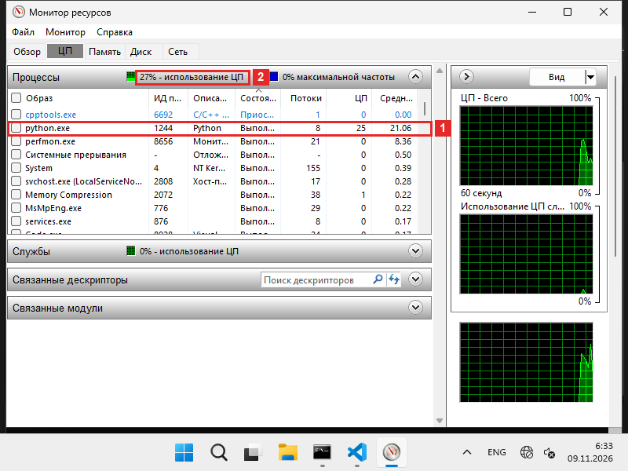
Что на кадреМонитор ресурсов, вкладка «ЦП». Слева — таблица процессов, справа — графики загрузки.
- 1Строка нашей программы
python.exe, номер 1244. В столбце «Потоки» — 8, в столбце «ЦП» — 25: процесс занимает четверть процессора, одно ядро из четырёх. - 2Загрузка всего компьютера — 27%. Почти вся она — наша программа: остальные процессы в таблице стоят около нуля.
Что на кадреСлева Терминал: программа запущена и напечатала свой номер — 8642. Справа Мониторинг системы, вкладка «ЦП», в поиске набрано
python.- 1Строка Python с номером 8642. В столбце «% ЦП» — 97,7: процесс занимает почти ровно одно ядро. В столбце «Потоки» — 5.
- 2Внизу окна — загрузка всего компьютера: «Пользователь» 26,54%, «Свободно» 54,32%. Наша программа работает изо всех сил, а компьютер в целом наполовину свободен.
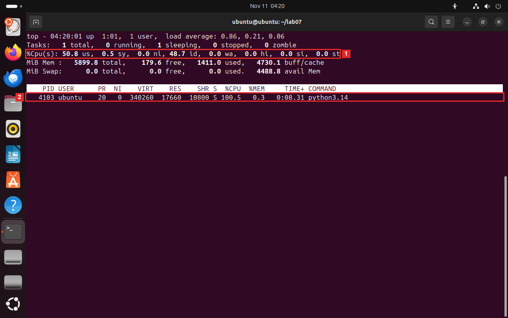
Что на кадреТерминал с программой
top. Вверху — сводка по всему компьютеру, ниже — строка нашего процесса.- 1Строка
%Cpu(s)— загрузка всех ядер вместе.50,8 us— половина процессора занята программами. У этой ВМ два ядра, значит, занято одно. - 2Наш процесс
python3.14, номер 4103. В столбце%CPU— 100,5: ровно одно ядро.
Что это значитЧетыре потока заняты пустым циклом, а процесс получил один процессор из четырёх — 25%, как один цикл в ЛР 6. Потоков 8: четыре рабочих, главный и три служебных потока, которые Python держит в Windows. Они видны в шаге 2.
Что это значитЧетыре потока заняты пустым циклом, а процесс получил одно ядро — около 100%, как один цикл в ЛР 6. Потоков 5: четыре рабочих и главный, который их запустил и ждёт.
Что это значитЧетыре потока заняты пустым циклом, а процесс получил одно ядро — 100%, как один цикл в ЛР 6. Второе ядро ВМ свободно, хотя работы хватило бы на оба.
В отчёт. процент процесса и число его потоков.
Снимок в отчёт · 01 Сохраните окно как
screenshots/01_gil_monitor.png. На снимке должно быть видно: процесс Python в мониторе: его процент и число потоков. - 1Строка нашей программы
-
Посмотрите потоки процессаЕсли программа шага 1 уже завершилась, снова выполните
start /b python spin.py. Затем выполнитеpowershell -c "(Get-Process python).Threads | ft Id,ThreadState,WaitReason,TotalProcessorTime"
PowerShell выведет потоки процессаpython: номер, состояние, причину ожидания и процессорное время.Посмотрите потоки процессаЕсли программа шага 1 уже завершилась, снова выполнитеpython3.14 spin.py &. Затем выполнитеps -M -p $!: ключ-Mвыводит по строке на каждый поток процесса.Посмотрите потоки процессаВtopнажмите Shift+H: вместо процессов появятся потоки, у каждого свой номер. Выйдите клавишей Q.Зачем этот шагПроцент процесса — это сумма. Заглядываем внутрь: четыре потока работают вместе или по очереди?
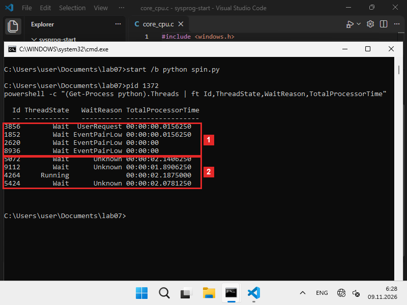
Что на кадреКомандная строка. Команда PowerShell вывела таблицу: одна строка — один поток процесса
python. Столбцы: номер потока, состояние (Running— работает,Wait— ждёт), причина ожидания и сколько процессорного времени поток уже получил. Процесс на кадре — новый запуск.- 1Служебные потоки. Первый — главный: он ждёт с причиной
UserRequest, пока закончат рабочие. Ещё три Python держит в Windows для своих нужд. Процессорного времени у всех четырёх почти нет — они не работают. - 2Четыре рабочих потока с пустым циклом. Работает (
Running) только один, три ждут (Wait). Времени у всех почти поровну, около 2 секунд: 2,14, 1,89, 2,19 и 2,08 — замок переходит от одного к другому.
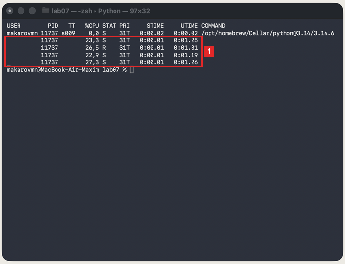
Что на кадреТерминал, вывод
ps -M: одна строка — один поток процесса 11737 (процесс на кадре — новый запуск). Столбец%CPU— сколько ядра занимает поток,STAT— состояние:R— работает,S— ждёт. Первая строка, над рамкой, — главный поток: 0%, он только ждёт рабочих.- 1Четыре рабочих потока: 23,3, 26,5, 22,9 и 27,3% — каждый получает около четверти ядра, вместе около одного ядра. Работает (
R) один, три ждут (S).
Что на кадреtopв режиме потоков: теперь одна строка — один поток, а не процесс.- 1Сводка:
5 total, 1 running, 4 sleeping— у процесса 5 потоков, работает один, остальные ждут. - 2Сами потоки. Четыре рабочих называются
Thread-1 (spin)…Thread-4 (spin): 40,5, 26,5, 22,0 и 12,0% — вместе около одного ядра. СостояниеR(работает) только у первого. Нижняя строкаpython3.14— главный поток, 0%.
Что это значитВ каждый момент работает один рабочий поток, остальные ждут. За время работы они получили почти поровну: замок переходит от потока к потоку, и каждый успевает поработать примерно четверть времени.
Что это значитЧетыре потока делят одно ядро: в сумме около 100%. Состояние
Sу трёх из четырёх — они ждут своей очереди на замок, хотя свободных ядер в компьютере много.Что это значитЧетыре потока делят одно ядро: в сумме около 100%. Имена
Thread-1 (spin)система получила от Python: начиная с 3.14 он передаёт ей имя потока и функцию, которую тот выполняет.В отчёт. сколько потоков у процесса и сколько из них выполняется одновременно.
Снимок в отчёт · 02 Сохраните окно как
screenshots/02_threads.png. На снимке должно быть видно: список потоков процесса: сколько выполняется, сколько ждёт. - 1Служебные потоки. Первый — главный: он ждёт с причиной
-
Запустите то же в Python без GILВыполните
start /b python3.14t spin.pyи снова откройте Монитор ресурсов. Через несколько секунд выполните ту же команду PowerShell, заменив имя процесса:(Get-Process python3.14t).Threads.Запустите то же в Python без GILВыполнитеpython3.14t spin.py &и посмотрите на строку в Мониторинге системы. Затем выполнитеps -M -p $!.Запустите то же в Python без GILВыполнитеpython3.14t spin.py &, затемtop -d 2 -p $!. Через несколько секунд нажмите Shift+H.Зачем этот шагТот же код, но в Python без замка. Если всё дело в замке, потоки займут все ядра.
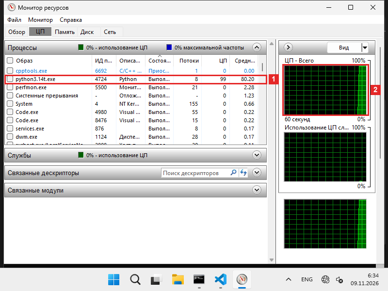
Что на кадреМонитор ресурсов, вкладка «ЦП». Запущен Python без GIL —
python3.14t.exe.- 1Строка
python3.14t.exe, номер 4724: «Потоки» — 8, «ЦП» — 99. Процесс занял почти весь процессор, все четыре ядра. Надпись «0% — использование ЦП» над таблицей просто не успела обновиться. - 2График «ЦП — Всего» справа: зелёная полоса упёрлась в 100%.
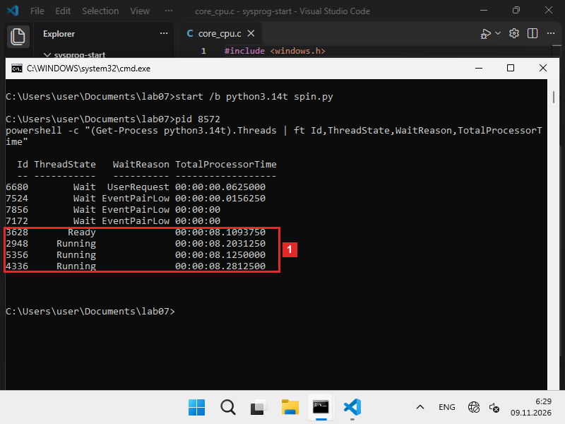
Что на кадреКомандная строка, потоки нового запуска
python3.14t(номер 8572). Четыре служебных потока сверху, как и в шаге 2, ждут.- 1Четыре рабочих потока: три
Running— работают, одинReady— готов и ждёт свободного ядра долю секунды. Процессорного времени у каждого почти одинаково, 8,1–8,3 секунды.
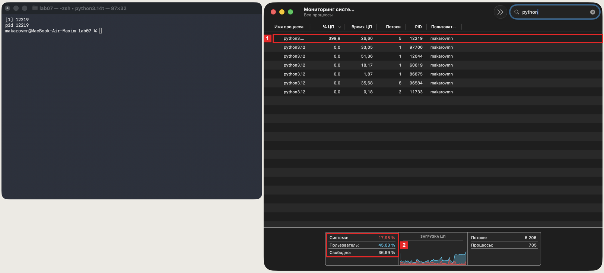
Что на кадреСлева Терминал: запущен
python3.14t, номер 12219. Справа — Мониторинг системы.- 1Строка python3.14t: в столбце «% ЦП» — 399,9. Это четыре ядра, занятых полностью. Потоков, как и раньше, 5.
- 2Загрузка компьютера: «Пользователь» — 45,03%, а в шаге 1 было 26,54%.
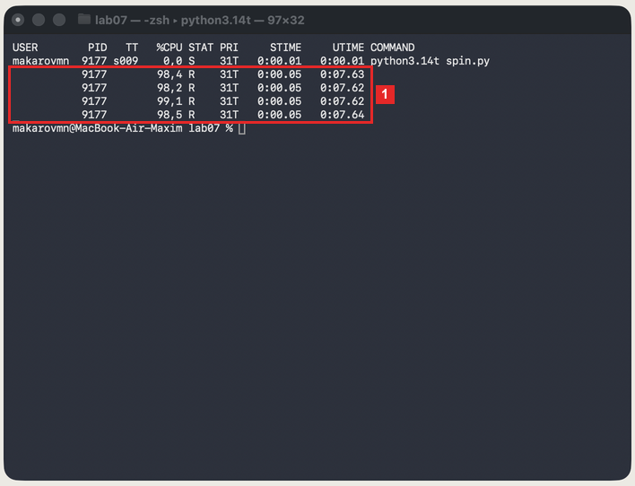
Что на кадреТерминал,
ps -Mдля другого запуска (номер 9177). Первая строка — главный поток, 0%.- 1Четыре рабочих потока: 98,4, 98,2, 99,1 и 98,5% — каждый занимает целое ядро. У всех состояние
R: работают одновременно, никто не ждёт.
Что на кадреtop, запущенpython3.14t.- 1Сводка процессора:
100,0 us— оба ядра ВМ заняты полностью, свободного (id) — 0. - 2Процесс
python3.14t, номер 4111: в столбце%CPU— 200,0, то есть два ядра.
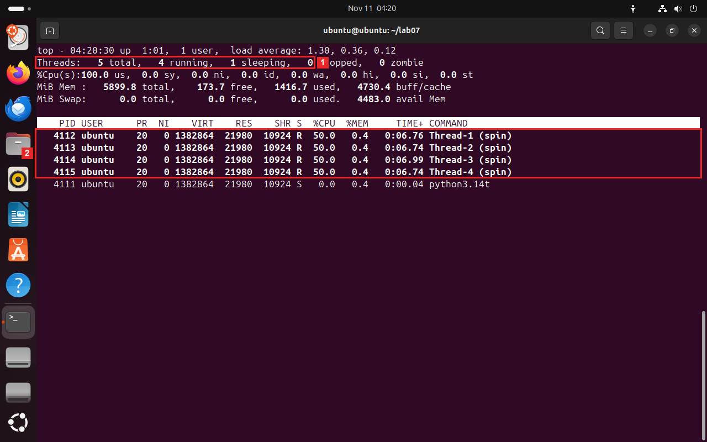
Что на кадреТот же процесс в режиме потоков.
- 1Сводка:
4 running— работают сразу четыре потока. - 2Четыре рабочих потока по 50,0%, у всех
R. Потоков четыре, а ядер два, поэтому каждый получает половину ядра.
Что это значитТот же код занял все четыре процессора: 99% против 25% в шаге 1. Рабочие потоки ничего не ждут, и за одинаковое время каждый получил почти одинаково.
Что это значитТот же код занял четыре ядра: 399,9% против 97,7% в шаге 1. Каждый поток выполняется на своём ядре и ничего не ждёт.
Что это значитТот же код занял оба ядра ВМ: 200% против 100% в шаге 1. Четыре потока на двух ядрах получают по половине ядра: без GIL предел ставит число ядер.
В отчёт. процент процесса и проценты потоков без GIL.
Снимок в отчёт · 03 Сохраните окно как
screenshots/03_nogil_monitor.png. На снимке должно быть видно: процесс python3.14t в мониторе: его процент. - 1Строка
-
Сравните время работыВыполните
python threads.py & python3.14t threads.py. Программа делит одну и ту же работу — 200 миллионов шагов цикла — на 1, 2 и 4 потока и печатает время для каждого случая.Сравните время работыВыполнитеpython3.14 threads.py; python3.14t threads.py. Программа делит одну и ту же работу — 200 миллионов шагов цикла — на 1, 2 и 4 потока и печатает время для каждого случая.Зачем этот шагПроценты в мониторе — только намёк. Секундомер честнее: становится ли работа быстрее от лишних потоков?
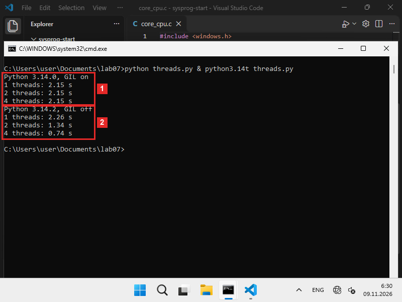
Что на кадреКомандная строка. Программа
threads.pyзапущена дважды: в обычном Python и в Python без GIL. Каждый раз она делает одну и ту же работу на 1, 2 и 4 потоках и печатает время.- 1Обычный Python 3.14.0,
GIL on— замок включён: 2,15 секунды на одном потоке, на двух и на четырёх. Потоки ничего не ускорили. - 2Python 3.14.2 без замка,
GIL off: 2,26 → 1,34 → 0,74 секунды. Чем больше потоков, тем быстрее.
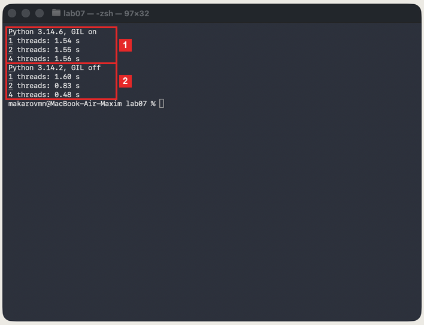
Что на кадреТерминал. Программа
threads.pyзапущена дважды: в обычном Python и в Python без GIL. Каждый раз она делает одну и ту же работу на 1, 2 и 4 потоках и печатает время.- 1Обычный Python 3.14.6,
GIL on— замок включён: 1,54, 1,55 и 1,56 секунды. Потоки ничего не ускорили. - 2Python 3.14.2 без замка,
GIL off: 1,60 → 0,83 → 0,48 секунды. Чем больше потоков, тем быстрее.
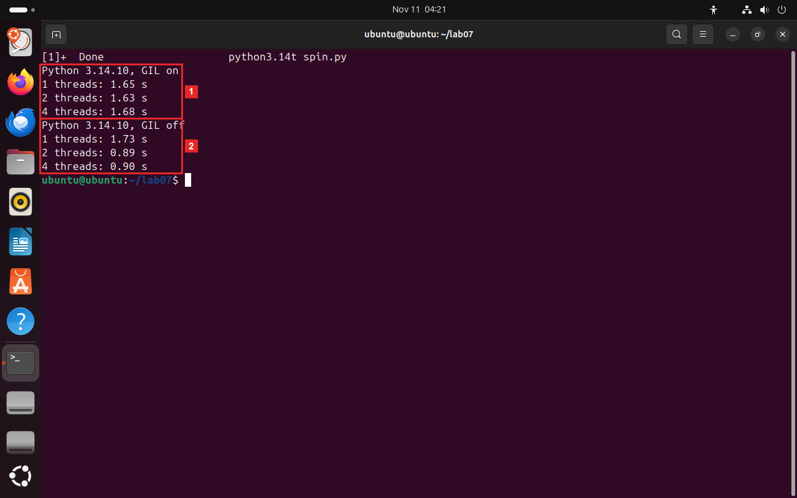
Что на кадреТерминал. Программа
threads.pyзапущена дважды: в обычном Python и в Python без GIL. Каждый раз она делает одну и ту же работу на 1, 2 и 4 потоках и печатает время.- 1Обычный Python 3.14.10,
GIL on— замок включён: 1,65, 1,63 и 1,68 секунды. Потоки ничего не ускорили. - 2Python 3.14.10 без замка,
GIL off: 1,73 → 0,89 → 0,90 секунды. Два потока вдвое быстрее одного, а четыре — не быстрее двух: у ВМ всего два ядра.
Что это значитС GIL время не меняется: потоки выполняют работу по очереди. Без GIL четыре потока быстрее одного в 3 раза. Один поток без GIL чуть медленнее, чем с GIL: интерпретатор без замка тратит больше на защиту своих данных.
Что это значитС GIL время не меняется: потоки выполняют работу по очереди. Без GIL четыре потока быстрее одного в 3,3 раза. Один поток без GIL чуть медленнее, чем с GIL: интерпретатор без замка тратит больше на защиту своих данных.
Что это значитС GIL время не меняется: потоки выполняют работу по очереди. Без GIL два потока быстрее одного почти вдвое, а четыре — не быстрее двух: у ВМ два ядра. Один поток без GIL чуть медленнее, чем с GIL: интерпретатор без замка тратит больше на защиту своих данных.
В отчёт. время на 1, 2 и 4 потока в обоих Python и во сколько раз ускорились 4 потока.
Снимок в отчёт · 04 Сохраните окно как
screenshots/04_time.png. На снимке должно быть видно: вывод threads.py в Python с GIL и без. - 1Обычный Python 3.14.0,
-
Включите GIL обратноВыполните
set PYTHON_GIL=1& python3.14t threads.py& set PYTHON_GIL=. Переменная окруженияPYTHON_GIL=1велит Python без GIL снова включить замок. Последняя команда убирает переменную.Включите GIL обратноВыполнитеPYTHON_GIL=1 python3.14t threads.py. Переменная окруженияPYTHON_GIL=1велит Python без GIL снова включить замок; записанная перед командой, она действует только на эту команду.Зачем этот шагУбеждаемся, что ускорение дало именно отсутствие замка, а не другая версия Python: включаем замок обратно в той же сборке.
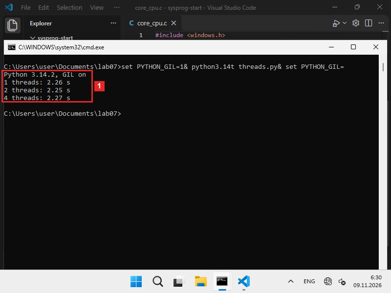
Что на кадреКомандная строка. Та же программа в Python без GIL, но с переменной
PYTHON_GIL=1, которая включает замок обратно.- 1Вверху вывода —
GIL on: замок снова работает. Время 2,26, 2,25 и 2,27 секунды — потоки опять ничего не ускоряют.
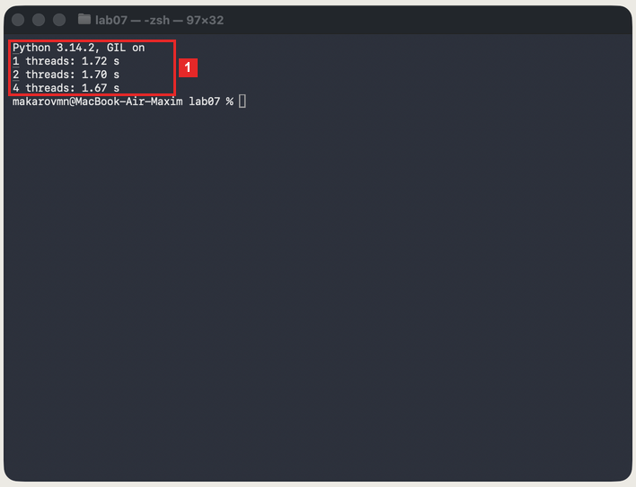
Что на кадреТерминал. Та же программа в Python без GIL, но с переменной
PYTHON_GIL=1, которая включает замок обратно. Сама команда на кадре стёрта, остался её вывод.- 1Вверху вывода —
GIL on: замок снова работает. Время 1,72, 1,70 и 1,67 секунды — потоки опять ничего не ускоряют.
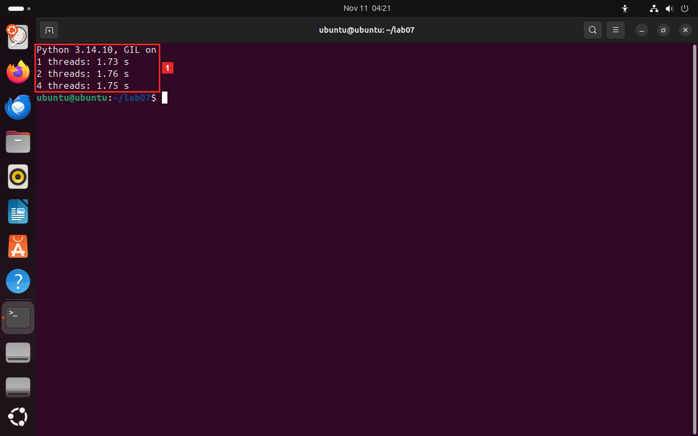
Что на кадреТерминал. Та же программа в Python без GIL, но с переменной
PYTHON_GIL=1, которая включает замок обратно.- 1Вверху вывода —
GIL on: замок снова работает. Время 1,73, 1,76 и 1,75 секунды — потоки опять ничего не ускоряют.
Что это значитТа же программа сборки 3.14t с включённым замком снова не ускоряется. Значит, ускорение в шаге 4 дало отсутствие замка: сборка Python та же.
Что это значитТа же программа сборки 3.14t с включённым замком снова не ускоряется. Значит, ускорение в шаге 4 дало отсутствие замка: сборка Python та же.
Что это значитТа же программа сборки 3.14t с включённым замком снова не ускоряется. Значит, ускорение в шаге 4 дало отсутствие замка: сборка Python та же.
В отчёт. время на 1, 2 и 4 потока с
PYTHON_GIL=1. - 1Вверху вывода —
-
Запустите потоки, которые ждутВыполните
python wait.py. В этой программе каждый поток спит 2 секунды — так поток ждёт ответа сети или диска. Программа запускает 1 и 4 таких потока.Запустите потоки, которые ждутВыполнитеpython3.14 wait.py. В этой программе каждый поток спит 2 секунды — так поток ждёт ответа сети или диска. Программа запускает 1 и 4 таких потока.Зачем этот шагЧаще поток не считает, а ждёт — ответа сети или диска. Проверяем, мешает ли замок ожиданию.
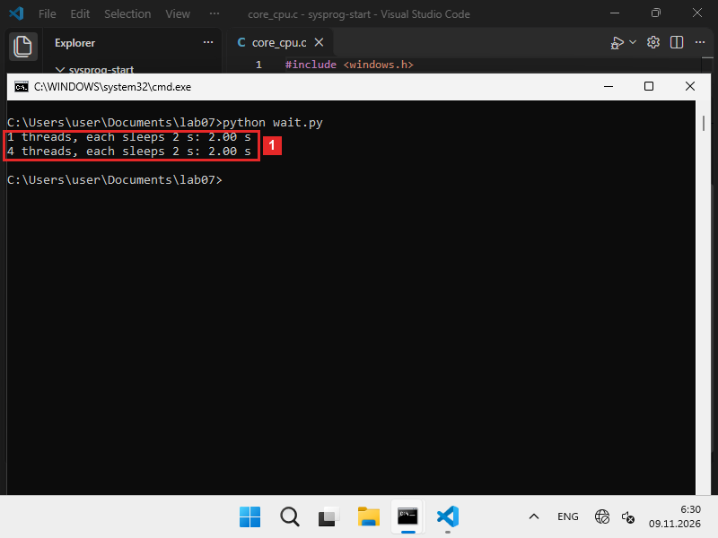
Что на кадреКомандная строка. Программа
wait.pyв обычном Python, с замком. Её потоки ничего не считают, а спят по 2 секунды — как будто ждут ответа сети.- 1Один поток — 2,00 секунды, четыре потока — тоже 2,00. Если бы они ждали по очереди, вышло бы 8 секунд: значит, все четыре спали одновременно.
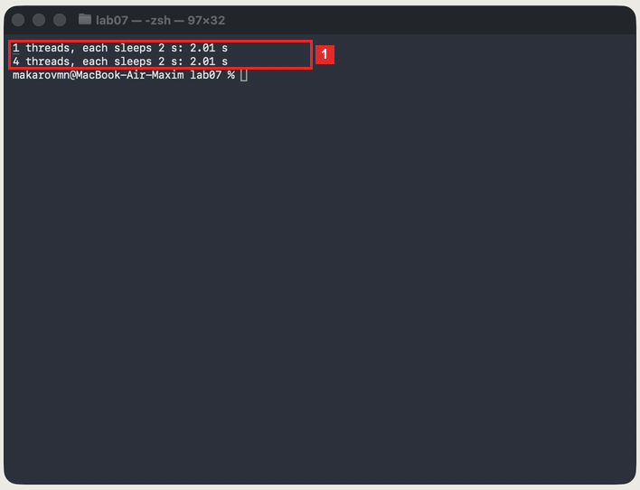
Что на кадреТерминал. Программа
wait.pyв обычном Python, с замком. Её потоки ничего не считают, а спят по 2 секунды — как будто ждут ответа сети.- 1Один поток — 2,01 секунды, четыре потока — тоже 2,01. Если бы они ждали по очереди, вышло бы 8 секунд: значит, все четыре спали одновременно.
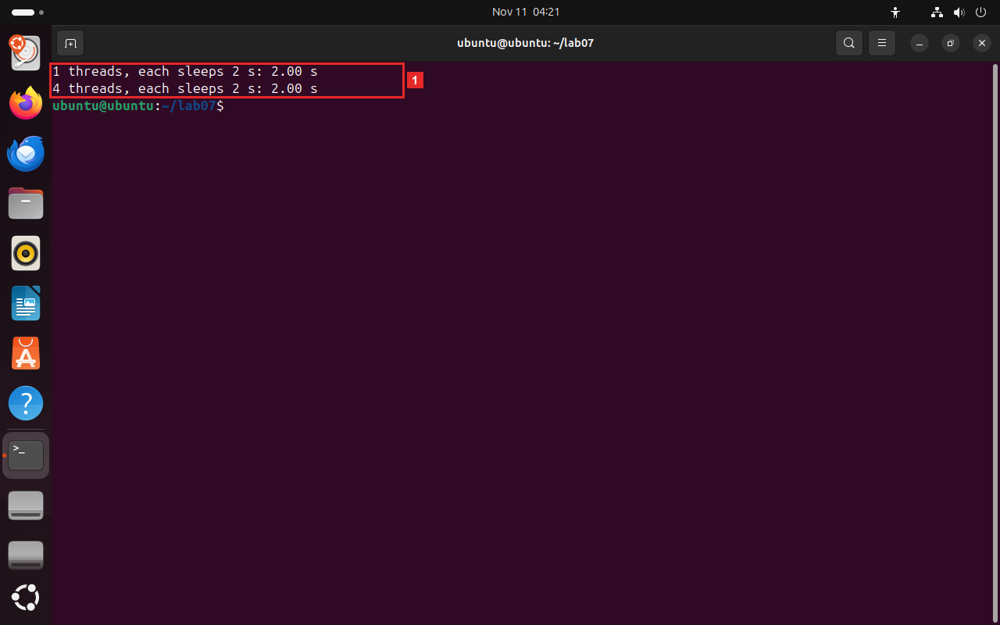
Что на кадреТерминал. Программа
wait.pyв обычном Python, с замком. Её потоки ничего не считают, а спят по 2 секунды — как будто ждут ответа сети.- 1Один поток — 2,00 секунды, четыре потока — тоже 2,00. Если бы они ждали по очереди, вышло бы 8 секунд: значит, все четыре спали одновременно.
Что это значитОбычный Python с GIL, а четыре ожидания уложились в те же 2 секунды. Поток, который ждёт, отпускает замок, и другие потоки в это время идут дальше.
Что это значитОбычный Python с GIL, а четыре ожидания уложились в те же 2 секунды. Поток, который ждёт, отпускает замок, и другие потоки в это время идут дальше.
В отчёт. время с 1 и 4 ожидающими потоками.
§4Что получилось
| Windows, 4 ядра | macOS, 10 ядер | Linux, 2 ядра | |
|---|---|---|---|
| 4 потока, Python с GIL | процесс 25% | 97,7% | 100,5% |
| Потоки с GIL | один Running, три Wait | по 23–27%, в основном S | 40,5 + 26,5 + 22 + 12% |
| 4 потока без GIL | 99% | 399,9% | 200%, по 50% на поток |
| Работа на 1 / 4 потока, с GIL | 2,15 / 2,15 с | 1,54 / 1,56 с | 1,65 / 1,68 с |
| То же без GIL | 2,26 / 0,74 с | 1,60 / 0,48 с | 1,73 / 0,90 с |
Без GIL с PYTHON_GIL=1 | 2,26 / 2,27 с | 1,72 / 1,67 с | 1,73 / 1,75 с |
| 4 потока ждут по 2 с | 2,00 с | 2,01 с | 2,00 с |
- С GIL четыре считающих потока делят одно ядро — быстрее не становится.
- Без GIL каждый поток получает своё ядро, пока ядер хватает: 4 потока быстрее одного в 3–3,3 раза, а на 2 ядрах ВМ Linux — почти вдвое.
- Потоки, которые ждут, ускоряются и с GIL: ожидающий отдаёт замок.
- Замок держит только код Python — потоки на C, как в главе 2.4, он не трогает.
§5Отчёт
Бланк — в labs/07-python-threads/report.md. Замените каждый пропуск ___ данными со своего экрана, снимки положите в screenshots/. Коммит — labs 07: потоки Python и GIL, отчёт.
# ЛР 7. Потоки Python и GIL Система: ___ Ядер (логических процессоров): ___ Версии Python (обычный и без GIL): ___ ## Python с GIL Процент процесса и число потоков: ___ Сколько потоков выполняется одновременно: ___ ## Python без GIL Процент процесса и проценты потоков: ___ ## Время работы С GIL, 1 / 2 / 4 потока: ___ Без GIL, 1 / 2 / 4 потока: ___ Без GIL с PYTHON_GIL=1: ___ Ожидание, 1 и 4 потока: ___ Почему ожидающие потоки ускоряются и с GIL: ___ Не получилось: ___ ## Снимки экрана    
Кроме чисел в отчёт кладутся 4 снимков экрана. В папке labs/07-python-threads/screenshots уже лежат заглушки с нужными именами, а в report.md — ссылки на них с подписями. Сделайте снимок окна после шага из таблицы и сохраните его поверх заглушки с тем же именем: подпись и ссылку менять не нужно, на GitHub отчёт сразу покажет ваш снимок. В каждом шаге такой снимок отмечен оранжевой строкой «Снимок в отчёт».
Как снять окно: Win+Shift+S → «Окно», затем сохранить из «Ножниц» как PNG⌘+⇧+4, затем Пробел и щелчок по окну — PNG появится на Рабочем столеPrtSc → «Окно», PNG сохраняется в папку «Изображения/Снимки экрана». Снимок — всё окно программы, без обрезки; имя файла — строго из таблицы.
| № | После шага | Файл | Что должно быть видно |
|---|---|---|---|
| 01 | 1 | 01_gil_monitor.png | процесс Python в мониторе: его процент и число потоков |
| 02 | 2 | 02_threads.png | список потоков процесса: сколько выполняется, сколько ждёт |
| 03 | 3 | 03_nogil_monitor.png | процесс python3.14t в мониторе: его процент |
| 04 | 4 | 04_time.png | вывод threads.py в Python с GIL и без |
§6Проверьте себя
Пять вопросов с ответами
Почему четыре занятых потока в обычном Python загружают одно ядро?
Код Python выполняет только поток, который держит GIL. Остальные ждут замка, и в каждый момент работает один поток.
Сколько процентов покажет процесс с четырьмя занятыми потоками без GIL на компьютере с двумя ядрами?
Около 200% в top и Мониторинге системы или 100% в Мониторе ресурсов Windows: потоков больше, чем ядер, и каждый получает половину ядра.
Что доказывает опыт с PYTHON_GIL=1?
Та же сборка Python без изменений программы снова перестаёт ускоряться, когда замок включён. Значит, ускорение даёт отсутствие замка.
Почему потоки, которые спят или ждут сеть, ускоряются и с GIL?
Поток отпускает замок, когда начинает ждать. Пока он ждёт, замок получают другие потоки, и ожидания идут одновременно.
Почему один поток без GIL работает чуть медленнее, чем с GIL?
Без общего замка интерпретатор защищает свои данные по отдельности, и на каждую операцию уходит немного больше времени. На кадрах — 1,60 с против 1,54 с в macOS.